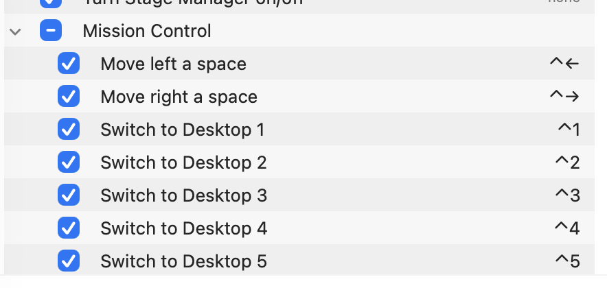
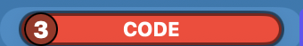
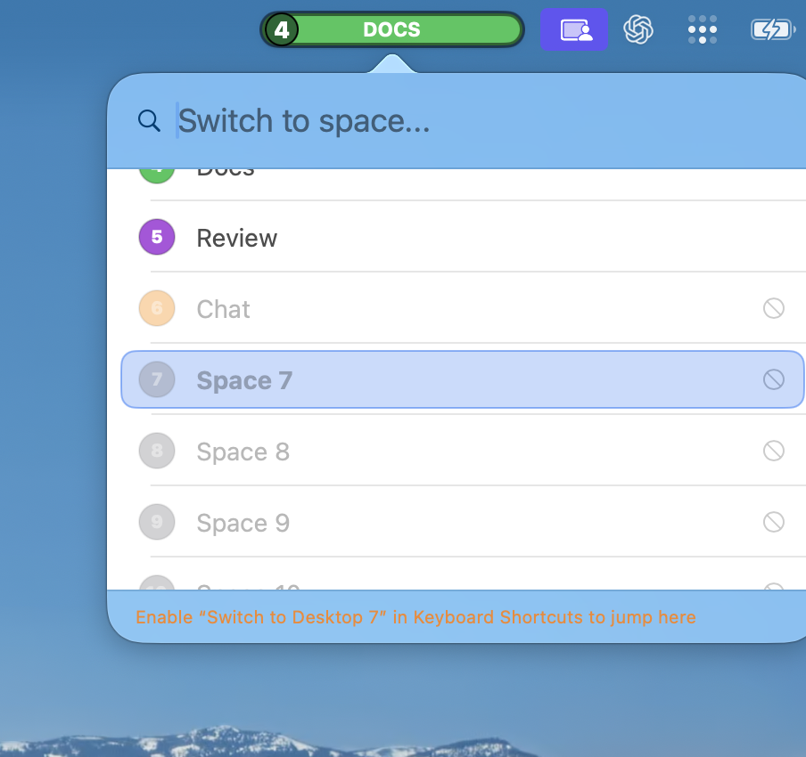

Documentation
Everything SpacePill does, and what it needs from macOS.
SpacePill is a menu bar app for navigating macOS Spaces: a colour-coded pill for the Space you're on, plus hotkeys to relabel it, jump to another one, and take notes. One native executable, no dependencies, no network access.
On this page
Requirements#
| Operating system | macOS 13 Ventura or later |
|---|---|
| Architecture | Apple silicon and Intel |
| Permissions | Accessibility (required for switching) · Input Monitoring (optional, for responsiveness) |
| System configuration | macOS "Switch to Desktop N" shortcuts, which the Setup window helps you turn on — see below |
| Disk footprint | The app, plus plain text files under ~/.spacepill/ |
| Network | None. The app contains no networking code. |
Install#
Install script (recommended)
$ curl -fsSL https://spacepill.dev/install.sh | sh
Downloads the latest signed release, installs
SpacePill.app into /Applications,
launches it, and offers to put the spacepill
CLI on your PATH. macOS only.
Direct download
Download SpacePill.dmg from the
latest release,
open it, and drag SpacePill into
Applications. Releases are Developer ID signed and
notarised by Apple, so they open with no warnings.
Build from source
Clone the repository
and run ./bin/start.sh, which builds, bundles,
signs, and launches the app. Don't run the bare
swift build binary — without a bundle it has
no bundle identifier, so Launch at Login and the
permission grants won't behave like the real app. See
CONTRIBUTING
for the details.
First launch
SpacePill has no Dock icon and no main window — it is a
menu bar item only. On first launch it opens a short
Setup window that walks you through the
permissions and shortcuts below. If the pill shows
?, switch Spaces once so it can read the
current one. Only one instance runs at a time; a second
launch detects the first and exits.
Switching between Spaces#
macOS exposes no API for activating a Space, so the only way any app can move you to a Desktop is to press the keys you would press yourself. SpacePill replays your own Switch to Desktop N keyboard shortcuts. These live under System Settings → Keyboard → Keyboard Shortcuts → Mission Control, one checkbox per Desktop — and Apple ships them turned off. SpacePill's Setup window checks whether they are on and, if any are off, sends you straight to the right pane.

To do it by hand: open Keyboard Shortcuts, select Mission Control, and tick Switch to Desktop 1, Switch to Desktop 2, and so on. SpacePill re-reads this configuration every time you open Quick Switch or Preferences, so changes take effect immediately, with no relaunch.
The default binding is ⌃ plus the Desktop number (⌃1, ⌃2, …), but you can bind anything you like — SpacePill reads whatever you actually configured and replays that, so rebinding is safe.
Checking what macOS thinks is enabled
The bindings live in the com.apple.symbolichotkeys
preference domain. To inspect Desktop 1 (ID 118):
# 118..127 = "Switch to Desktop 1..10" $ /usr/libexec/PlistBuddy -c "Print :AppleSymbolicHotKeys:118" \ ~/Library/Preferences/com.apple.symbolichotkeys.plist
An absent entry means the factory default, which
for these IDs is off. Writing this domain with
defaults write does not take effect until the
WindowServer re-reads it at login — enable the shortcuts
through the System Settings UI, which registers them live.
Permissions#
SpacePill asks for two grants, both under System Settings → Privacy & Security. They do different jobs, and failing to grant them fails differently.
| Permission | What it's for | Without it |
|---|---|---|
| Accessibility | Posting the synthetic keystrokes that change Spaces. Switching has no API, so SpacePill sends the same key presses you would make yourself. | Quick Switch cannot change Spaces. The bar still opens and lists your Spaces; pressing ⏎ just does nothing. |
| Input Monitoring | A keyboard event tap that notices ⌃←/⌃→ so the pill can update at the start of the native transition animation instead of after it. | Everything still works. The pill simply lags roughly a second behind arrow-key switches instead of moving instantly. |
Input Monitoring is the scarier-sounding of the two, and it is genuinely optional: it exists only to make the indicator feel immediate. If you'd rather not grant it, don't — SpacePill also polls and listens for the system's active-space notification, so the pill stays correct either way.
SpacePill also uses private SkyLight/CoreGraphics APIs to read Space IDs and detect transitions. That is a read-only observation of your window server state; nothing is transmitted anywhere.
Setup & Preferences#
Open Preferences by right-clicking the pill and choosing Preferences…

| Setting | Default | Effect |
|---|---|---|
| Launch at Login | Off | Registers SpacePill as a login item. |
| Enable Quick Switch Bar | Off | Registers the Quick Switch hotkey and prompts for Accessibility if needed. |
| Enable Space Notes | Off | Registers the Notes hotkey and allows the floating notes panel to appear. |
| Match Space Color for Notes Border | On | Draws the notes panel border in the current Space's colour. |
| Max Notes Height | 300 px | Ceiling for the auto-sizing notes panel, adjustable from 100 to 800 px. |
| Hotkeys | See below | Each of the three hotkeys can be re-recorded. The Quick Switch and Notes rows only appear once those features are enabled. |
| Reset All Space Labels & Colors | — | Clears every per-Space label and colour. Notes are not touched. |
Hotkey reference#
| Action | Default | Availability |
|---|---|---|
| Quick Edit Space | ⌘ ⇧ S | Always registered |
| Quick Switch Bar | ⌘ ⇧ J | Only when Quick Switch is enabled |
| Space Notes | ⌘ ⇧ N | Only when Space Notes is enabled |
| Where | Input | Does |
|---|---|---|
| Menu bar pill | Left click | Opens Quick Edit |
| Menu bar pill | Right click | Context menu: Setup…, Preferences…, Quit |
| Quick Switch Bar | ↑ ↓ | Move the selection |
| Quick Switch Bar | ⏎ | Switch to the selected Space |
| Quick Switch Bar | esc | Close without switching |
| Quick Edit | ⏎ | Save label and colour |
| Quick Edit | ⌫ | Clear this Space's label and colour |
| Space Notes | ⌘ ⇧ N | Toggle the panel for this Space |
Rebinding
In Preferences, click a hotkey field and press the
combination you want. SpacePill registers global hotkeys
through the system, so a combination already claimed by
macOS or another app will not register — if a new binding
does nothing, try a different one. Bindings are stored in
~/.spacepill/settings.json.
The menu bar pill#
The pill is a capsule showing two things: a circular badge with the Space's 1-based index across all displays, and the Space's label in uppercase. Its fill is the colour you assigned; the badge is a darker shade of it.

A Space you have never configured shows a neutral
translucent pill with just the number. If SpacePill
cannot determine the current Space at all, the pill shows
? — switch Spaces once and it will pick it up.
Detection combines three sources: the system's active-space notification, a two-second poll, and (with Input Monitoring granted) a keyboard event tap that makes an optimistic guess the moment you press ⌃←/⌃→, so the pill turns over at the start of the animation rather than the end. If the guess turns out wrong, it reverts within a couple of seconds.
The index is positional: it renumbers whenever Spaces are added, removed, or reordered in Mission Control. Labels and colours are keyed by the Space's stable UUID instead, so they follow the Space rather than the slot.
Quick Edit — label and colour a Space#
Press ⌘ ⇧ S (or left-click the pill) to open a small popover for the Space you are currently on.
- Label — free text, shown uppercased in the pill and searchable from Quick Switch.
- Colour — preset swatches plus the system colour picker for anything else.
- Save (⏎) writes the label and colour against this Space's UUID.
- Clear (⌫) removes the configuration, returning the pill to its neutral state.
When you open Quick Edit on an unconfigured Space, SpacePill pre-selects the first preset colour no other Space is using, so a run of new Spaces ends up visually distinct without you choosing anything.
Quick Switch — jump to a Space by name#
Press ⌘ ⇧ J to open a search bar listing every Space across every display, each with its number badge and colour.
- Fuzzy-match a label: the matcher is subsequence-based, so
dcsfinds Docs andemlfinds Email. It is case- and accent-insensitive, and ranks the closest match first. - Type a number to jump straight to that Space's index.
- ↑ ↓ to move, ⏎ to switch, esc to dismiss.
Greyed-out rows
Before showing the list, SpacePill re-reads your System Settings shortcut configuration and works out which Spaces it can actually reach. Rows it cannot reach are dimmed, marked with a "no entry" symbol, and refuse to activate. The footer explains the specific reason for whichever row is selected.

| Footer message | Fix |
|---|---|
| "Enable Switch to Desktop N in Keyboard Shortcuts to jump here" | Tick that Desktop's checkbox — see Switching between Spaces. |
| "Can't jump here — macOS has no shortcut past Desktop 10" | Nothing to fix; macOS defines no such shortcut. Reduce your Space count, or reorder so the ones you jump to sit in the first ten. |
This deliberately fails loudly. A jump that silently does nothing is indistinguishable from a bug, so SpacePill would rather tell you it is refusing.
Space Notes#
Press ⌘ ⇧ N to open a floating scratchpad anchored under the pill. Each Space has its own note, and the panel swaps content the instant you change Space.
- Markdown highlighting for headings, bold, italics, inline code, fenced code blocks, and list markers.
- Auto-continued lists: press ⏎ on a
-,*,+or numbered list item and the next line starts with the same marker at the same indent. - Saves as you type — there is no save button and no unsaved state.
- Remembers scroll position per Space, so returning puts you back where you were.
- Auto-sizing panel that grows with the content up to the Max Notes Height set in Preferences.
- Per-Space open state: leave the panel open on a Space and it reappears when you come back, staying hidden on Spaces where you closed it.
- The border can take the Space's colour, so you always know whose notes you're looking at.
Notes are plain Markdown files on disk:
~/.spacepill/space_<index>/notes.md
The spacepill CLI#
spacepill is a companion command line tool
that lets scripts do from a terminal what the hotkeys do
from the keyboard. It ships inside the app bundle and
talks to the running app over a local Unix socket — it
holds no state of its own, so the app must be
running (commands exit with code 3 otherwise).
The installer offers to put it on your PATH;
you can also run spacepill install-cli at any
time to symlink it into /usr/local/bin.
$ spacepill list 1 ● Inbox 2 ● Email 3 ● Code ← current 4 ● Docs $ spacepill jump docs Switched to Space 4 · Docs $ spacepill notes --set <<< "- [ ] review the release PR"
Commands
| Command | Does |
|---|---|
current [--json] | Show the Space you are on |
list [--json] | List every Space with its number, label, and colour |
jump <number|label> | Jump to a Space by number or fuzzy label (aliases: switch, j) |
label <text> [--space N] [--color <hex>] | Label (and optionally colour) the current or given Space |
label --clear [--space N] | Remove a label and colour |
notes [--space N] | Print a Space's notes |
notes --set [--space N] | Replace notes with stdin (or a quoted argument) |
notes --edit [--space N] | Edit notes in $EDITOR |
notes --path [--space N] | Print where the notes file lives |
doctor | Check permissions and shortcuts — run this first when switching doesn't work |
update [--check] | Update SpacePill from the latest verified release |
version | Print the version |
install-cli | Symlink the CLI into /usr/local/bin |
help | Full usage, straight from your installed version |
Omitting --space always means the Space you
are on right now, and --json prints the raw
response object for scripting. Jumping is subject to
exactly the same constraints as the in-app Quick Switch:
the corresponding "Switch to Desktop N" shortcut must
be enabled, and Desktops past the tenth cannot be reached
— see Switching between Spaces.
Exit codes
| Code | Meaning |
|---|---|
0 | Success |
1 | Error |
2 | Bad usage |
3 | SpacePill.app is not running |
4 | That Space cannot be switched to |
5 | No such Space |
Updating
spacepill update compares your installed
version against the latest
GitHub release
and installs it only after verifying the download's
code signature — an unverifiable build is refused rather
than installed. spacepill update --check
reports what's available without changing anything.
The settings file#
Everything SpacePill persists lives in one directory:
~/.spacepill/settings.json # hotkeys, toggles, per-Space label + colour ~/.spacepill/space_1/notes.md # notes for the Space at index 1 ~/.spacepill/space_2/notes.md ~/.spacepill/space_<N>/notes.md ~/.spacepill/spacepill.sock # CLI socket, only while the app runs
settings.json is written by the app whenever
anything changes. You can read it freely; if you edit it
by hand, quit SpacePill first, or your changes will be
overwritten on the next save.
{
"isQuickSwitchEnabled": true,
"isNotesEnabled": true,
"matchSpaceColorForNotesBorder": true,
"maxNotesHeight": 300,
"quickEditHotKey": { "keyCode": 1, "modifiers": 768 },
"quickSwitchHotKey": { "keyCode": 38, "modifiers": 768 },
"notesHotKey": { "keyCode": 45, "modifiers": 768 },
"spaceConfigs": {
"1A2B3C4D-5E6F-7081-9A0B-C1D2E3F40506": {
"label": "Agents",
"hexColor": "FF007AFF",
"isNotesOpen": true,
"scrollPosition": 0
}
}
}
Fields
- isQuickSwitchEnabled
- Whether the Quick Switch Bar and its hotkey are active.
- isNotesEnabled
- Whether Space Notes and its hotkey are active.
- matchSpaceColorForNotesBorder
- Draw the notes panel border in the current Space's colour rather than a neutral hairline.
- maxNotesHeight
- Maximum height of the notes panel in points. The Preferences slider ranges from 100 to 800 in steps of 50.
- quickEditHotKey / quickSwitchHotKey / notesHotKey
-
Each is
{ "keyCode": <virtual key code>, "modifiers": <Carbon modifier mask> }. The masks are256Command,512Shift,2048Option,4096Control, summed — so768is Command + Shift. Key codes are the usual macOS virtual key codes:1= S,38= J,45= N. Recording a hotkey in Preferences is much easier than editing this by hand. - spaceConfigs
- A map from a Space's UUID to its configuration. Keying by UUID is what makes labels and colours survive reordering Spaces in Mission Control.
- spaceConfigs[uuid].label
- The name shown in the pill (uppercased) and matched by Quick Switch.
- spaceConfigs[uuid].hexColor
- Written as 8 hex digits in
AARRGGBBorder —FF007AFFis opaque system blue. PlainRGBandRRGGBBvalues are also accepted when reading. - spaceConfigs[uuid].isNotesOpen
- Whether the notes panel should reappear when you return to this Space.
- spaceConfigs[uuid].scrollPosition
- Saved vertical scroll offset of the notes panel for this Space.
Deleting settings.json and relaunching resets
SpacePill to defaults — which also turns Quick Switch and
Space Notes back off. Notes files are not touched by that.
Troubleshooting#
Quick Switch opens but pressing Return doesn't move me
This is almost always one of three things, in order of likelihood:
- The "Switch to Desktop N" shortcuts are not enabled. They are off on every fresh macOS install. Enable them → If the row you selected is greyed out, this is definitely it.
- Accessibility permission is missing. Check System Settings → Privacy & Security → Accessibility and make sure SpacePill is listed and ticked.
- The target Space is past Desktop 10. macOS defines no shortcut for it, so it can never be jumped to.
spacepill doctor checks all three at once from the terminal.
Some Spaces are greyed out in the list
Deliberate. Either that Desktop has no shortcut enabled, or it sits past Desktop 10. Select the row and read the footer hint — it names the specific reason.
⌘ ⇧ J or ⌘ ⇧ N does nothing
Those hotkeys are not registered until the corresponding feature is switched on. Right-click the pill → Preferences → tick Enable Quick Switch Bar and/or Enable Space Notes.
If a feature is enabled and the hotkey still does nothing, the combination may be claimed by macOS or another app — global hotkey registration fails when something else already owns it. Record a different one in Preferences.
Hotkeys worked, then stopped after an update
Permissions are bound to the app's code signature, and a new build can read as a new app. Reset and re-grant:
$ tccutil reset Accessibility com.jake.SpacePill $ tccutil reset ListenEvent com.jake.SpacePill
Then relaunch SpacePill and approve the prompts.
The pill shows ?
SpacePill has not identified the current Space yet.
Switch Spaces once. If it stays as ?, the
private APIs it reads may have changed in your macOS
version — please
open an issue
with your macOS version.
The pill lags about a second behind ⌃←/⌃→
The keyboard event tap could not be created, which normally means Input Monitoring has not been granted. Everything still works — the pill just updates after the transition instead of during it. Grant Input Monitoring to get the snappy behaviour back. In the log you will see:
[com.jake.SpacePill:spaces] Failed to create space switch event tap
My notes turned up on the wrong Space
Note files are named by positional index, so adding,
deleting, or reordering Spaces can shift them. Quit
SpacePill and rename the
~/.spacepill/space_<index> directories
to match the new numbering. See Space Notes.
Reading the log
SpacePill logs to the unified system log under its bundle identifier:
# live $ log stream --predicate 'subsystem == "com.jake.SpacePill"' # the last five minutes $ log show --predicate 'subsystem == "com.jake.SpacePill"' --last 5m
Categories are app, spaces,
hotkeys, ui, settings,
and notes. Space labels and note text are
deliberately redacted as <private>.
Starting over
Quit SpacePill, delete ~/.spacepill/settings.json,
and relaunch. That restores every default, including
turning Quick Switch and Space Notes back off.
Uninstall#
# 1. Quit SpacePill from the pill's right-click menu, then: $ rm -rf /Applications/SpacePill.app # 2. The CLI symlink, if you installed it: $ rm -f /usr/local/bin/spacepill # 3. Settings and notes (this deletes your notes — back them up first): $ rm -rf ~/.spacepill # 4. Revoke the permission grants: $ tccutil reset Accessibility com.jake.SpacePill $ tccutil reset ListenEvent com.jake.SpacePill
If you enabled Launch at Login, removing the app clears the login item; you can confirm under System Settings → General → Login Items & Extensions.
The "Switch to Desktop" shortcuts you enabled are a macOS setting, not a SpacePill one. They stay on unless you untick them yourself — which is usually what you want.